Locații de nuntă în București și Ilfov
- locații în director
- 120
- cu cazare în registrul SITUR
- 12
- medie ponderată Google
- 4,6 / 5
- evaluări Google
- 98.659
Cum alegi în zona Capitalei
În București și Ilfov poți începe comparația cu Conacul Filipescu (local pentru evenimente), Reina Events North (local pentru evenimente), the villa. Event House Casa Dimitrie Bolintineanu (centru de evenimente). Aceste proprietăți apar în primele poziții când luăm în calcul împreună nota și numărul de evaluări Google. Salvează adresele care vă interesează pentru a le așeza apoi alături în fișa de comparare a ofertelor.
Pentru partea de afară, avem o descriere a spațiului folosit la evenimente la Reina Events North — Recepție la cort în grădină · Bucharest Events Center — Ceremonie în grădină, lângă pădure. La vizionare, cere schița pentru numărul vostru de persoane, inclusiv locul unde vor sta muzicienii și pe unde intră invitații.
Dacă vin rude de departe, InterContinental AthéNéE Palace Bucharest by IHG are o unitate de cazare asociată în registrul SITUR. Înregistrarea pentru Intercontinental Athenee Palace Bucharest cuprinde 566 de locuri de dormit în 283 de spații de cazare. Întreabă câte camere pot fi păstrate pentru aceeași noapte înainte să trimiți invitaților detaliile de rezervare.
Toate locațiile din zonă
Ordinea ține cont de nota Google și de numărul evaluărilor. Cum calculăm ordinea
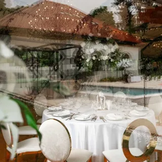
Fotografie a locației · Sursa fotografiei 1 Decembrie · Local pentru evenimente
Conacul Filipescu
Domeniu de 20.000 m² în 1 Decembrie, cu trei saloane, o nuntă de 260 de invitați documentată și grădină de circa 80 de locuri. Atenție la drumul de acces.
Strada Regina Maria, 077005 1 Decembrie+40 772 263 566
Fotografie a locației · Sursa fotografiei București · Local pentru evenimente
Reina Events North
Reina Events North, București. Pentru o vizionare, merită să precizezi denumirea The Tent, fiindcă în aceeași grădină apare și The White Mansion.
Șoseaua București-Ploiești 155, 013681 București+40 720 769 894
Fotografie a locației · Sursa fotografiei București · Centru de evenimente
the villa. Event House Casa Dimitrie Bolintineanu
the villa. Event House Casa Dimitrie Bolintineanu. Plaja largă de invitați pe care o amintește nu spune însă câți pot lua masa în grădină.
Strada Negustori 16, 010528 București+40 738 833 388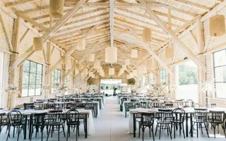
Fotografie a locației · Sursa fotografiei Ciolpani · Local pentru evenimente
NARRATIVE @ write your own story
NARRATIVE @ write your own story, Ciolpani. Un cuplu care și-a ținut nunta la NARRATIVE descrie două imagini foarte diferite din aceeași zi.
Intrarea Fermei 21, 077050 Ciolpani+40 740 248 888
Fotografie a locației · Sursa fotografiei București · Local pentru evenimente
Baroque Events & Garden
Grădină de evenimente pe Calea Rahovei, notată 4,9 din 362 de evaluări; mirii laudă mâncarea, rața în sos porto și comunicarea cu gazdele.
Calea Rahovei 145, 050891 București+40 726 350 802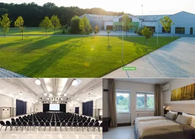
Fotografie a locației · Sursa fotografiei Țegheș · Centru de conferințe
Bucharest Events Center
Grădină de 4.000 m² lângă pădure, la Țegheș, cu foișoare și 300–500 de locuri indicate. Cazare, acces pentru scaun rulant și ce să întrebi.
Strada Frasinului 1, 077090 Țegheș+40 744 322 688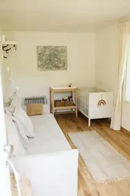
Fotografie a locației · Sursa fotografiei Snagov · Local pentru evenimente
Flying Fox Secret Garden
Grădină privată pe Șoseaua Snagov 13A, nota 4,9: nunți de zi cu bufet, botezuri și cununii civile. Ce să întrebi despre capacitate.
Șoseaua Snagov 13A, 077165 Snagov+40 744 440 003
Fotografie a locației · Sursa fotografiei Otopeni · Local pentru evenimente
PRIVATE MANSION
Pentru o aniversare de treizeci de ani la Private Mansion, gazda petrecerii relatează că a discutat detaliile cu Robert și a primit ajutor pentru catering.
Strada Valea Păsării 1, 075100 Otopeni+40 723 293 766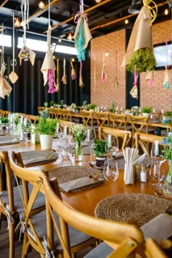
Fotografie a locației · Sursa fotografiei Buftea · Local pentru evenimente
Roua Garden
În relatarea unei familii, echipa Roua Garden s-a ocupat de prima aniversare a copiilor, de la decorul de grădină până la preparate și băuturi.
Strada Părului 14D, 070000 Buftea+40 731 134 264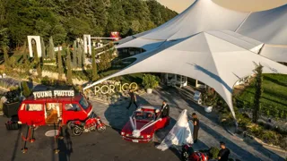
Fotografie a locației · Sursa fotografiei Ciolpani · Local pentru evenimente
PORTICO VENUE - Nunti & Evenimente
PORTICO VENUE - Nunti & Evenimente. Cea mai utilă măsurătoare la vizionare este însă distanța dintre prima și ultima masă în zona disponibilă grupului vostru.
Str. Calea Bucuresti 350 Luparia, 077050 Ciolpani+40 720 333 888
Fotografie a locației · Sursa fotografiei București · Sală de nunți
Events by Tonyo
Sală de nunți în București cu meniu Silver de la 71 EUR și cununii în aer liber; laude pentru mâncare, atenție la detaliile din contract.
Aleea Hobița Nr 1, 021821 București+40 723 170 007
Fotografie a locației · Sursa fotografiei București · Local pentru evenimente
Terra events hall
Terra events hall, București. Un cuplu a ales Terra Events pentru nuntă și pentru botezul fiului în aceeași zi de octombrie.
Bulevardul Lacul Tei 1 bis, 020371 București+40 733 503 500
Fotografie a locației · Sursa fotografiei București · Sală de nunți
Reina Events
Reina Events. Un cuplu povestește despre propria nuntă de la sfârșit de mai în Salonul Sofia și despre discuțiile cu echipa încă de la prima întâlnire.
Strada Locotenent Nicolae Pascu 81, 077160 București+40 724 415 433
Fotografie a locației · Sursa fotografiei București · Hotel
InterContinental AthéNéE Palace Bucharest by IHG
InterContinental AthéNéE Palace Bucharest by IHG. Un oaspete la Athénée Palace descrie camere spațioase și timpul petrecut la spa în timpul șederii.
Strada Episcopiei 1-3, 010292 București+40 21 303 3777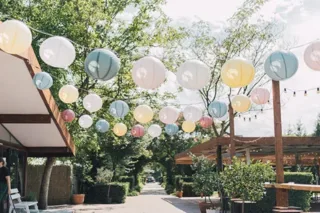
Fotografie a locației · Sursa fotografiei Roșu · Organizator de petreceri
Grădina cu licurici
Grădină cu ponton și Pavilion de Vară în Roșu, Ilfov, 4,8 din 754 de evaluări. Mai ales botezuri, plus o cununie religioasă documentată.
Strada Gospodari 16, 077042 Roșu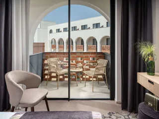
Fotografie a locației · Sursa fotografiei Cozieni · Hotel
Mercure Conacul Cozieni
Mercure Conacul Cozieni, Cozieni. La hotel își amintește pregătirea saunei și a jacuzziului exterior înainte de vizită.
Strada Manastirii 2, 077100 Cozieni+40 31 405 7000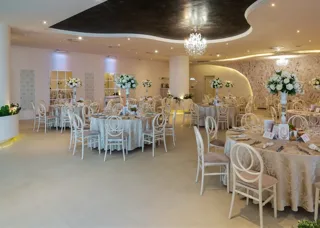
Fotografie a locației · Sursa fotografiei București · Local pentru evenimente
Amalfi Alegria
O familie care a organizat un botez la Amalfi Alegria a putut alege, printre altele, un meniu fără lactate și unul pescetarian.
Bd Tudor Vladimirescu 22 Cladirea Green Gate, parter, 050883 București+40 722 163 270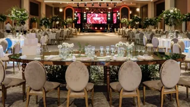
Fotografie a locației · Sursa fotografiei Ostratu · Centru de evenimente
Zooma
Zooma, Ostratu. Dacă vă interesează același parcurs, întrebați cât timp a rămas între ceremonii și când au putut invitații intra în salon.
Aleea Paradisul Verde 6, 077066 Ostratu+40 756 986 986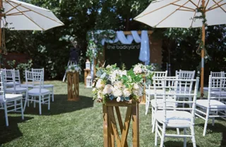
Fotografie a locației · Sursa fotografiei Dobroești · Sală de nunți
The Backyard
The Backyard. În relatare apar atât locurile de parcare folosite, cât și posibilitatea de a găsi rapid transport prin aplicații spre București.
Str. Balanţei 9-11, 077085 Dobroești+40 784 660 000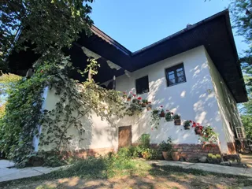
Fotografie a locației · Sursa fotografiei Nuci · Sală de nunți
Conacul Serghiescu
Conac pe aproape 1 ha la Nuci, Ilfov, cu ceremonii pe peluză. Mirii laudă cum echipa a mutat 15 mese înăuntru la furtună.
Str. Ialomiței, 077143 Nuci+40 726 115 309
Hartă ilustrată Comuna Snagov · Local pentru evenimente
Sura cu Nuferi
Sura cu Nuferi. Un părinte care a participat la o nuntă restrânsă la Șura cu Nuferi își amintește că putea vedea din restaurant jocul copiilor.
Str. Gorunului 14, 077165 Comuna Snagov+40 741 233 110
Fotografie a locației · Sursa fotografiei București · Local pentru evenimente
Spatiul VERSATIL
Spatiul VERSATIL, București. La un botez de la Spațiul Versatil, familia a ales meniul cu Ana și a adus o parte din obiectele de papetărie.
Bulevardul Basarabia 256, 030352 București+40 771 158 274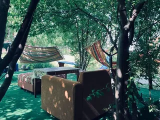
Fotografie a locației · Sursa fotografiei Otopeni · Cafenea de artă
Grădina Popânzoc
Grădină-cafenea de artă în Otopeni, cu hamace, limonadă și grătar pentru grupuri. Bună pentru o petrecere restrânsă; ce să afli înainte.
Strada Belgrad 32a, 075100 Otopeni+40 745 167 353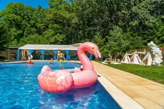
Fotografie a locației · Sursa fotografiei Tamași · Local pentru evenimente
Secret Forest Garden Corbeanca - Locatie petreceri copii la piscina in aer liber
O familie s-a întors doi ani la rând la Secret Forest Garden pentru aniversare și descrie piscina încălzită ca unul dintre punctele de atracție pentru copii.
Secret Forest Garden 2, Ilfov RO, Strada Alunișului 12 A, 077068 Tamași+40 737 041 322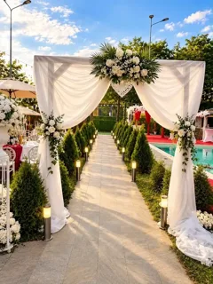
Fotografie a locației · Sursa fotografiei Popești-Leordeni · Local pentru evenimente
Lolu Events
Lolu Events, Popești-Leordeni. Mirii care au petrecut aici în septembrie au ales să sublinieze un detaliu al organizării.
Șoseaua de Centură nr. 119, lângă Pădurea Craiului+40 723 308 126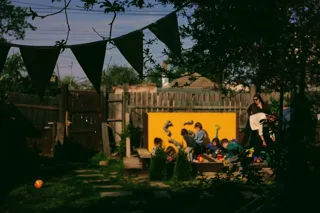
Fotografie a locației · Sursa fotografiei București · Local pentru evenimente
Mellow Garden
Mellow Garden, București. La vizită, alegeți o masă de unde un părinte ar vedea locul de joacă dorit și încercați traseul până acolo.
Strada Puiandrului 106, 023175 București+40 730 176 168
Fotografie a locației · Sursa fotografiei Otopeni · Centru artistic
Atelierele Viziunea | HUB Cultural-Artistic | Cursuri Arte Otopeni | Hand-Made | Centru Comunitar | Grădină de Vară
Hub cultural în Otopeni, cu scenă, ateliere și grădină de vară sub sălcii; 18 evaluări de 5. Nunțile nu sunt documentate, iată ce să întrebi.
Strada Belgrad 32a, 075100 Otopeni+40 745 167 353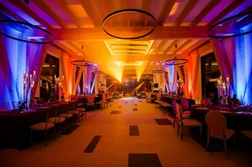
Fotografie a locației · Sursa fotografiei Izvorani · Local pentru evenimente
ASTERIA Lac Snagov
Ceremonie în aer liber cu vedere la lacul Snagov și petrecere în interior, la Izvorani. 17 evaluări de nota maximă, mai ales de la botezuri.
Str. Jandarmeriei, 077051 Izvorani+40 723 862 454
Fotografie a locației · Sursa fotografiei București · Reper istoric
Palatul Bragadiru
Palatul Bragadiru, București. Pentru o ceremonie mai intimă, cereți calendarul celorlalte manifestări din ziua voastră.
Calea Rahovei 147-153, 050892 București+40 771 463 688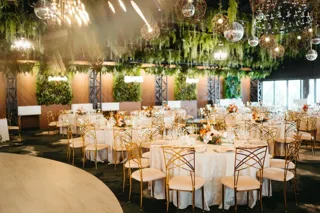
Fotografie a locației · Sursa fotografiei Săftica · Local pentru evenimente
Domeniile Saftica Evenimente
Local de nunți pe DN1 la Săftica, cu saloanele Ador și Forest și o terasă cu pergolă pentru până la 50 de invitați. Ce laudă mirii.
DN1, Calea Bucuresti, nr. 51, 077015 Săftica+40 21 555 3030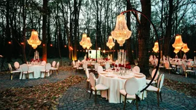
Fotografie a locației · Sursa fotografiei Nuci · Companie organizatoare de evenimente
Pădurile Regale
Pădurile Regale, Nuci. Pentru oaspeți va conta o distanță mult mai mică, cea pe care trebuie să o parcurgă de la intrare la ceremonie.
077143 Nuci+40 21 320 8954
Fotografie a locației · Sursa fotografiei București · Local pentru evenimente
RESTAURANT FLOREAL
RESTAURANT FLOREAL, București. Este un exemplu de folosire a restaurantului din București în momente cu ritmuri diferite.
Șoseaua Giurgiului 90, 040654 București+40 769 728 237
Fotografie a locației · Sursa fotografiei București · Atracție turistică
Palatul Noblesse
Cei 600 de metri pătrați ai grădinii de la Palatul Noblesse devin ușor de înțeles pe un plan în care sunt desenate și aleile, și mobilierul.
Strada Sfinților 7, 030167 București+40 749 232 311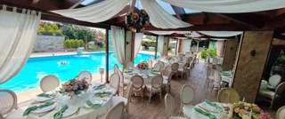
Fotografie a locației · Sursa fotografiei Corbeanca · Local pentru evenimente
The Brick
The Brick. Pentru o masă de familie la Corbeanca, porniți de la un eveniment apropiat de dimensiunea voastră și cereți să vedeți aranjamentul folosit.
THE BRICK, Aleea Paradisul Verde 2, 660044 Corbeanca+40 722 644 815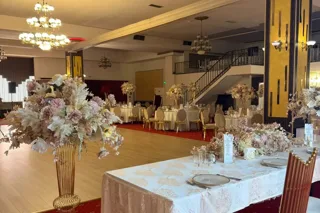
Fotografie a locației · Sursa fotografiei București · Sală de nunți
Iris Ballroom
La un botez organizat la Iris Ballroom, familia a discutat pregătirile cu Mihaela, iar în timpul evenimentului s-a bazat pe Sebastian ca șef de sală.
Bulevardul Poligrafiei 1B, 013704 București+40 755 746 191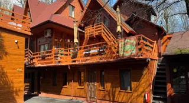
Fotografie a locației · Sursa fotografiei București · Cazare
Pensiunea Casa verde Bucuresti
Pensiunea Casa verde Bucuresti, București. Un oaspete descrie la Casa Verde camere cu aspect de cabană și amplasarea în pădure.
Aleea Teișani 70, 014034 București+40 730 616 544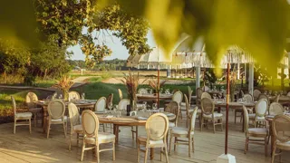
Fotografie a locației · Sursa fotografiei Ciolpani · Local pentru evenimente
Jubile Forest
În comuna Ciolpani, în zona pădurii Snagov, la Jubile Forest există mărturia unor miri care au ales chiar acest loc pentru nuntă.
Zona pădurii Snagov, comuna Ciolpani, Ilfov+40 731 090 920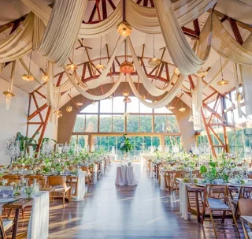
Fotografie a locației · Sursa fotografiei Snagov · Local pentru evenimente
Heaven By The Lake
Local de evenimente pe malul lacului Snagov, cu ponton pentru ceremonie, salon și piscină. Mirii laudă florile și coordonarea. Ce să întrebi.
Str. Mesteacanului, 077165 Snagov+40 743 036 211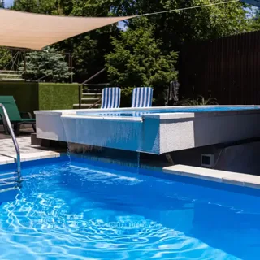
Fotografie a locației · Sursa fotografiei Tâncăbești · Local pentru evenimente
Locații evenimente Evergreen Snagov
Dacă vă place ideea unei după-amieze fără program impus, întrebați care dintre aceste activități puteți să le păstrați pentru grupul vostru.
Str. Ion C. Băcoianu 57, 077167 Tâncăbești+40 722 576 800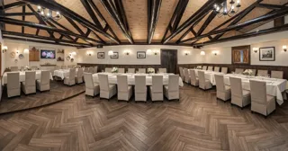
Fotografie a locației · Sursa fotografiei București · Local pentru evenimente
Event Room - Locație pentru evenimente
Local intim pe Strada Sub Tei din București, cu salon de 40 de locuri; aici s-au ținut cununii de 36 de persoane, botezuri și majorate.
Strada Sub Tei, 023672 București+40 724 614 723
Fotografie a locației · Sursa fotografiei Snagov · Local pentru evenimente
Casa Radu Snagov
Casa Radu Snagov, Snagov. Este un exemplu despre cum poate funcționa organizarea într-o vilă, cu altă echipă decât într-un restaurant.
Strada Intrarea Tuberozelor Street, number 8, 077165 Snagov+40 21 310 3672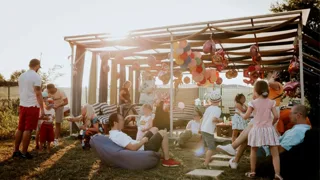
Fotografie a locației · Sursa fotografiei Odăile · Loc de joacă
Yardinia
Aceeași familie a apelat la Yardinia pentru două aniversări ale copilului și descrie de fiecare dată o bună colaborare cu echipa.
Strada Școlii, 075100 Odăile+40 732 325 884
Hartă ilustrată București · Local pentru evenimente
Emporium Events
Local de evenimente pe Bulevardul Basarabia din București, cu nunți și botezuri lăudate pentru mâncare. Sala e descrisă ca mică; întreabă capacitatea.
Bulevardul Basarabia 37-39, 022103 București+40 772 145 568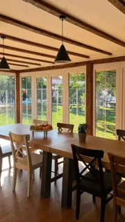
Fotografie a locației · Sursa fotografiei Buftea · Serviciu pentru petreceri de copii
Jardino Petrecei Copii Buftea. Inchiriere Locatie Evenimente Bucuresti, Ilfov
La Jardino, o vizitatoare descrie umbra copacilor și fețele de masă cu dantelă, detalii care schimbă felul în care arată o masă de vară în Buftea.
Strada Părului 10, 070000 Buftea+40 723 546 139Fotografie a locației · Sursa fotografiei București · Hotel
Radisson Blu Hotel, Bucharest
Radisson Blu Hotel, Bucharest, București. Cereți să vedeți exact ușa dintre cele două spații și unde ar începe intrarea mirilor.
Calea Victoriei 63-81, 010065 București+40 21 311 9000Fotografie a locației · Sursa fotografiei București · Hotel
Novotel Bucharest City Centre
Novotel Bucharest City Centre, București. Terasa pe care Novotel o prezintă pentru petreceri are vedere spre Calea Victoriei.
Calea Victoriei 37B, 030167 București+40 21 308 8500
Fotografie a locației · Sursa fotografiei Otopeni · Local pentru evenimente
Hilton Garden Inn Aeroportul București
Hotel lângă aeroport în Otopeni, cu 4.074 de evaluări și recepție foarte lăudată; util pentru invitați veniți cu avionul, nunțile nu sunt descrise.
Bulevardul Aeroportului 13, 075150 Otopeni+40 31 403 5600
Fotografie a locației · Sursa fotografiei București · Restaurant cu specific românesc
Conacul Zeneea
Restaurant românesc pe Pache Protopopescu, cu terasă și loc de joacă la mansardă; 4,6 din 2.232 de evaluări, dar fără parcare proprie.
Bulevardul Pache Protopopescu 38, 030167 București+40 739 250 899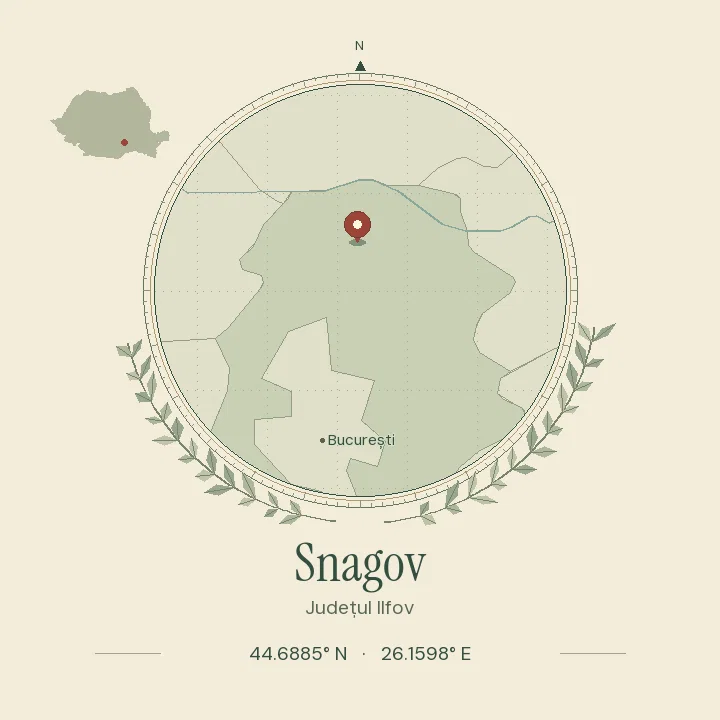
Hartă ilustrată Snagov · Local pentru evenimente
Artha Park - In timpul saptamanii inchirierea exclusiv online
Artha Park - In timpul saptamanii inchirierea exclusiv online. Un vizitator la Artha Park descrie o ieșire de două ore cu caiacul la Snagov.
Str. Plopilor 1, 077165 Snagov+40 735 868 986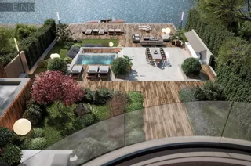
Fotografie a locației · Sursa fotografiei Buftea · Local pentru evenimente
Bokaa
Complex pe malul lacului Buftea cu cununii pe ponton și saloane de până la 250 de persoane; media 4,6 din 1.469 de evaluări.
Aleea Cu Brazi 3-5, 070000 Buftea+40 723 164 299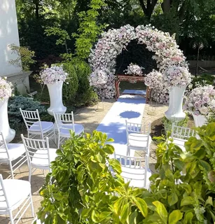
Fotografie a locației · Sursa fotografiei București · Local pentru evenimente
Le Château
Dacă vă place acest decor, mergeți prin sală cu fotograful și priviți de unde ar putea surprinde intrarea grupului sau primul dans, cu acordul locației.
Strada Turturelelor 11, 030881 București+40 725 333 333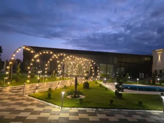
Fotografie a locației · Sursa fotografiei Vidra · Local pentru evenimente
Novac Ballroom
Novac Ballroom din Vidra are o alee cu lumini joase și o insulă de gazon. Un invitat descrie cum se împart mesele între încăperile salonului.
Strada Calea București 36A, 077185 Vidra+40 761 211 752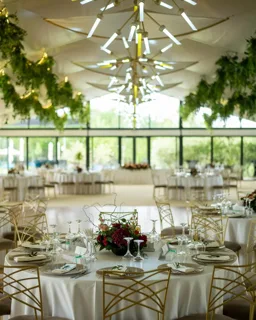
Fotografie a locației · Sursa fotografiei Comuna Snagov · Local pentru evenimente
Lagoo Snagov
Lagoo Snagov, Comuna Snagov. Un cuplu care și-a ținut nunta în iulie la Lagoo precizează numele pavilionului: Sole.
DJ101B, 077165 Comuna Snagov+40 770 282 344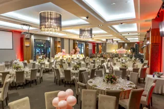
Fotografie a locației · Sursa fotografiei București · Local pentru evenimente
Pentagon Events
Pentagon Events, București. Pentru cuplul care are deja fotograf sau cofetar, acesta este un bun punct de pornire.
Bulevardul Expoziției, Intrare C, 012101 București+40 771 251 554
Fotografie a locației · Sursa fotografiei București · Hotel
Palatul Suter
Palatul Suter. Oaspetele care a sărbătorit aici o aniversare descrie treptele de la intrare și terasa camerei primite, amenajată cu o măsuță și două scaune.
Aleea Suter 23-25, 040547 București+40 739 675 782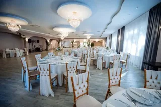
Fotografie a locației · Sursa fotografiei Pantelimon · Local pentru evenimente
Cernica Events
Cernica Events în Pantelimon oferă cununie pe ponton și 11 saloane. Vezi capacitățile pentru Ponton, Amethyst și Opal și meniurile publicate pentru 2027.
Strada Strandului 52, 077145 Pantelimon+40 31 631 3411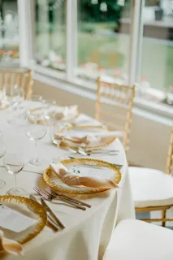
Fotografie a locației · Sursa fotografiei Otopeni · Restaurant
La Seratta
Un cuplu care și-a ținut nunta la Seratta descrie un grup de sub o sută cincizeci de persoane și amintește în mod distinct grădina și terasa.
Strada Ferme F 15, 075100 Otopeni+40 745 183 098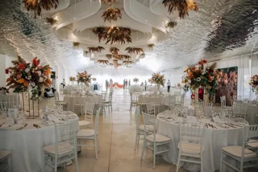
Fotografie a locației · Sursa fotografiei București · Local pentru evenimente
Daimon Events
Patru saloane cu piscină sau terasă proprie pe Calea Piscului, București; o petrecere de 47 de persoane în salonul Bistro. Ce să întrebi la vizionare.
Calea Piscului 10, 040354 București+40 749 260 359
Fotografie a locației · Sursa fotografiei București · Local pentru evenimente
BigBallroom
Salon de evenimente pe Șoseaua Olteniței: botez cu circa 70 de adulți și formație de nouă persoane, terasă de 50 m², nota 4,6 din 447 de evaluări.
Șoseaua Olteniței 87-99, 041303 București+40 723 666 937
Fotografie a locației · Sursa fotografiei București · Sală de nunți
Zocalo Ballroom
Zocalo Ballroom. La Zocalo, o familie a organizat nunta și botezul primului copil în aceeași zi de mai, după ce alesese locul pe baza impresiilor citite online.
Strada Chilia Veche 2, București+40 732 962 256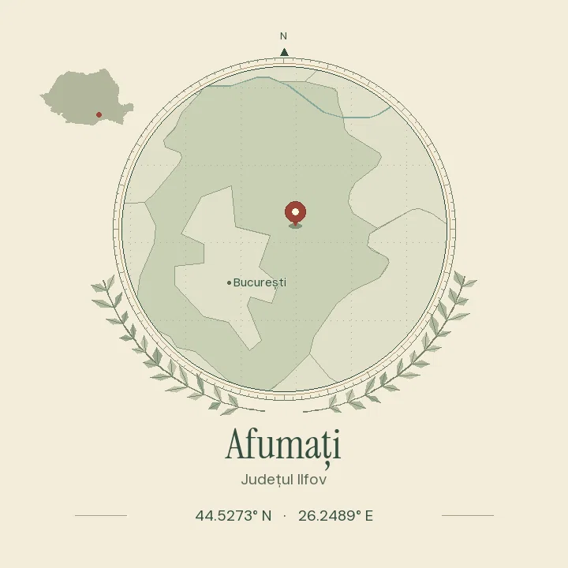
Hartă ilustrată Afumați · Hotel
Pensiunea La Puiu
Pensiunea La Puiu. În curtea pensiunii La Puiu, un oaspete descrie mai multe foișoare, mobilier de grădină, leagăn și bucătărie de vară.
Strada Traian, 077010 Afumați+40 723 120 842
Fotografie a locației · Sursa fotografiei Buftea · Restaurant cu specific egiptean
Taste On Set
Un client venise la Taste On Set pentru prânz și își amintește de mâncare ca de o experiență la care contau mirosurile, prezentarea și atmosfera sonoră.
Strada Studioului 1, 070000 Buftea+40 749 619 645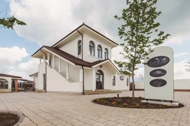
Fotografie a locației · Sursa fotografiei Dumbrăveni · Restaurant
La Conac
În Dumbrăveni, un vizitator descrie foișoarele care separă mesele de la La Conac și curtea îngrijită, dar are rezerve despre preparatele încercate.
Strada Ion Lahovari 87c, 077016 Dumbrăveni+40 755 806 806Fotografie a locației · Sursa fotografiei Dragomirești-Deal · Local pentru evenimente
BOHO Forest
Nuntă în pădure la Dragomirești-Deal: ring de dans între copaci, până la 300 de persoane afară și un contract de citit cu atenție.
Strada Calea Codrului 1, 077096 Dragomirești-Deal+40 737 179 265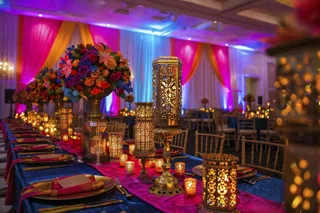
Fotografie a locației · Sursa fotografiei Săftica · Local pentru evenimente
Gradina Lahovari
Grădină de 4.000 m² în Săftica, Ilfov, cu pachet de nuntă în aer liber pentru 80–300 de persoane, foișor, cununie pe loc și baruri tematice.
Strada Ion Lahovari 9, 077015 Săftica+40 745 147 766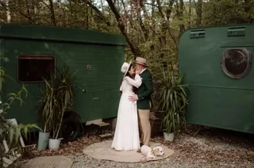
Fotografie a locației · Sursa fotografiei Ciolpani · Sală de nunți
The Green Spot Wedding Barn
The Green Spot Wedding Barn, Ciolpani. La The Green Spot, un cuplu povestește o nuntă în trei locuri distincte.
Padurea Snagov, 077050 Ciolpani+40 723 756 102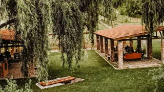
Fotografie a locației · Sursa fotografiei Tâncăbești · Local pentru evenimente
Gradinile Jolie
Local pe malul lacului Snagov, la Tâncăbești: cununie, slujbă și petrecere în aceeași zi, plimbări cu barca; 4,6 din 244 de evaluări.
Strada Ion C. Băicoianu 13, 077167 Tâncăbești+40 723 365 952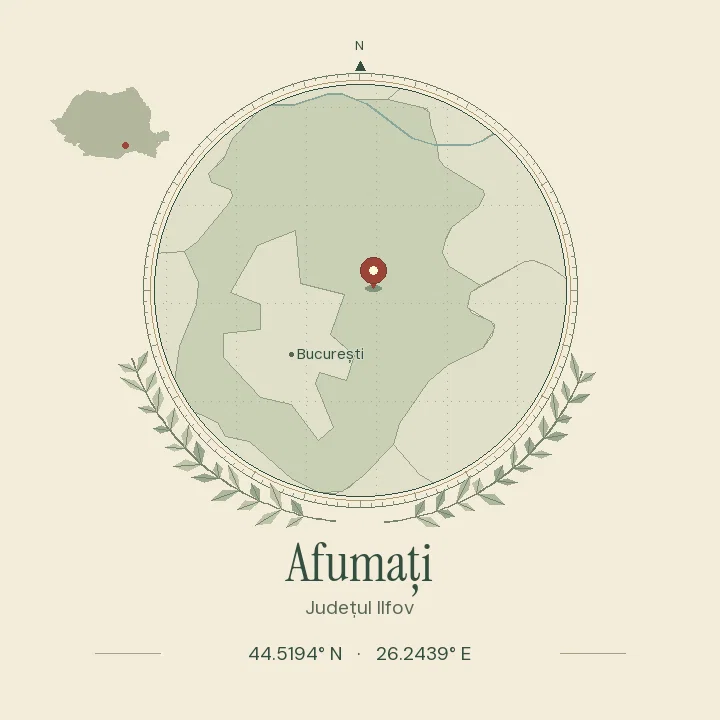
Hartă ilustrată Afumați · Pensiune
Pensiunea CrisAndre
La CrisAndre, experiența unei familii cu doi copii ridică întrebări concrete despre camera folosită atunci, inclusiv starea unor prize și prezența țânțarilor.
DN2, 077010 Afumați+40 723 587 471
Fotografie a locației · Sursa fotografiei Otopeni · Bed & Breakfast
Vila Toparceanu
Vila Toparceanu. Un vizitator la Vila Topârceanu a numărat doar câteva locuri de parcare în fața clădirii și chiar el prezintă numărul ca aproximativ.
Strada George Topârceanu 11, 075100 Otopeni+40 752 011 478
Fotografie a locației · Sursa fotografiei București · Local pentru evenimente
Secret Garden Events
Secret Garden Events, București. Dacă vă atrage ideea de a lua masa printre plante, cereți să vedeți chiar acest spațiu pregătit de cină.
Calea Rahovei 147, 026432 București+40 748 191 698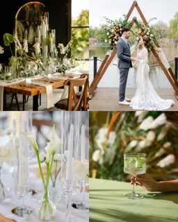
Fotografie a locației · Sursa fotografiei Siliștea Snagovului · Local pentru evenimente
Lotus by the Lake
Lotus by the Lake, Siliștea Snagovului. Dacă vii și tu cu un organizator, folosește prima întâlnire pentru a împărți responsabilitățile pe spații.
Strada Mânăstirea Vlad Ţepeş 114, 077117 Siliștea Snagovului+40 735 098 609
Hartă ilustrată București · Ceainărie
Explore la Conac
La Explore la Conac, un părinte care a organizat aniversarea fiicei sale amintește încăperi rezervate activităților creative.
Strada Nadeș 5, 075100 București+40 722 110 221
Fotografie a locației · Sursa fotografiei Otopeni · Local pentru evenimente
Wish Events
Wish Events, Otopeni. La vizionare, întreabă dacă suprafața verde folosită pentru pauze poate primi și o ceremonie cu scaune.
Strada Odăii 26, 075100 Otopeni+40 784 589 293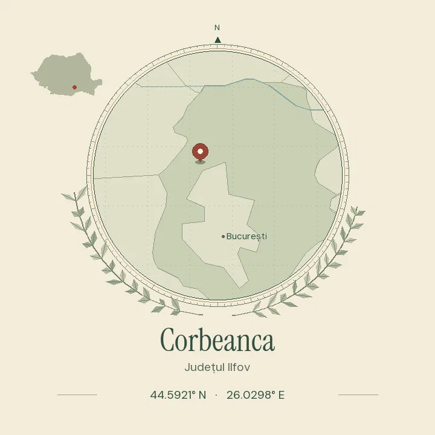
Hartă ilustrată Corbeanca · Grădină
Corbeanca Garden
Grădină cu cort și piscină cu apă sărată la Corbeanca, pentru evenimente mici; o recenzie a unui vecin ridică semne despre zgomot și avize.
Șoseaua Unirii 315, 776075 Corbeanca+40 741 141 079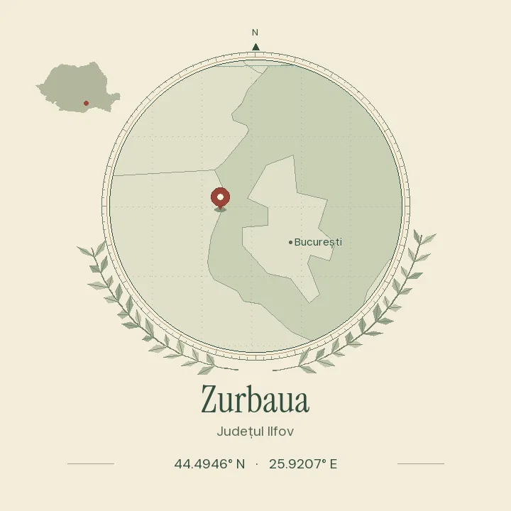
Hartă ilustrată Zurbaua · Local pentru evenimente
Gradina Verde Events
Gradina Verde Events. Dacă ajungeți să comparați mai multe grădini cu nume asemănătoare din Ilfov, folosiți acest reper când luați legătura cu administratorul.
Strada Rozelor, 077097 Zurbaua+40 784 813 959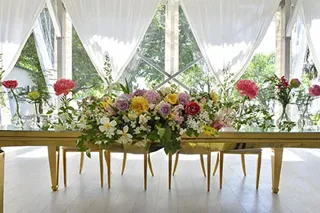
Fotografie a locației · Sursa fotografiei Buftea · Local pentru evenimente
Studio 25
Studio 25 din Studiourile Buftea are grădină pe malul lacului, 2.000 m² la exterior și capacitate publicată de 200–600 de persoane. Vezi opțiunile de catering.
Strada Studioului 1, 070000 Buftea+40 766 934 660
Fotografie a locației · Sursa fotografiei București · Hotel
Grand Hotel Bucharest
Hotel central pe Bulevardul Nicolae Bălcescu, cu piscină la etajul 22 și terasă pentru petreceri private. Capacitate nepublicată; recenzii despre uzură.
Bulevardul Nicolae Bălcescu 4, 010051 București+40 21 310 2020
Fotografie a locației · Sursa fotografiei Snagov · Local pentru evenimente
Club Snagov
Hotel pe malul lacului în Snagov Sat, cu trei restaurante și piscine. Recenziile laudă priveliștea, critică mâncarea; întreabă de muzica afară.
1B Nufarului Street, Snagov Sat, Ilfov, Romania, 077165 Snagov+40 728 210 075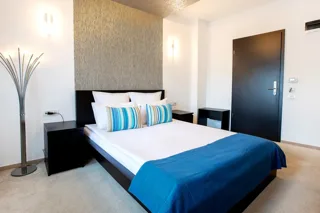
Fotografie a locației · Sursa fotografiei București · Hotel
Hotel Ambiance
Hotel Ambiance, București. Pentru invitațiile la Ambiance, reperul verificabil este adresa de pe Splaiul Independenței, la numărul 303.
060042, Splaiul Independenței 303, București+40 729 802 998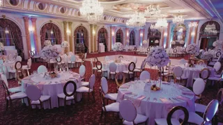
Fotografie a locației · Sursa fotografiei București · Local pentru evenimente
Empire Events
Empire Events. La Empire, un mire descrie cum persoana de contact a urmărit programul pe durata nunții și a ajutat cu servicii suplimentare.
Strada Popa Lazăr 5-25, 077085 București+40 727 745 589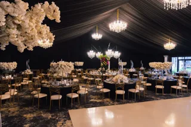
Fotografie a locației · Sursa fotografiei Pantelimon · Sală de nunți
Toya
Toya Concept are două saloane cu grădini proprii. Vezi configurația Eclipse, capacitatea anunțată pentru exterior și cele patru meniuri de nuntă din 2027.
Strada Strandului 101, 077145 Pantelimon+40 733 413 234Fotografie a locației · Sursa fotografiei 1 Decembrie · Local pentru evenimente
Domeniul cu Ciresi
Sală de nunți în 1 Decembrie, Ilfov, cu grădină, livadă și ceremonie în aer liber; 4,5 din 540 de evaluări. Ce să întrebi la vizionare.
Șoseaua Giurgiului 9, 077005 1 Decembrie+40 786 755 820
Fotografie a locației · Sursa fotografiei București · Local pentru evenimente
Zexe Evenimente
Zexe Evenimente. Pentru fotografii la o ceremonie restrânsă, merită să vedeți ce intră în cadru atunci când fotograful privește dinspre mese spre apă.
Strada Oltețului 30, 023818 București+40 728 219 452Fotografie a locației · Sursa fotografiei Afumați · Local pentru evenimente
Gradina cu Lavandă • Evenimente Private & Corporate
Grădină de 2.000 m² în Afumați, pentru 30–400 de persoane, cu terasă umbrită și două foișoare; recenziile vin mai ales de la botezuri.
Șoseaua Ștefănești 111, 077010 Afumați+40 721 172 390Hartă ilustrată Corbeanca · Organizator de evenimente
Cortina Garden
Grădină de evenimente pe malul lacului în Corbeanca, cu nunți semi-outdoor și catering extern. Ce să verifici la umbră și locuri pe scaun.
Șoseaua Unirii 148, Corbeanca+40 740 300 264Fotografie a locației · Sursa fotografiei București · Hotel
Cazare centru - Motor House
Pensiune simplă în casă veche din București, lângă Bulevardul Unirii. Cazare ieftină pentru invitați, cu reclamații serioase de verificat.
Strada Maximilian Popper nr 53, 030861 București+40 722 512 299
Fotografie a locației · Sursa fotografiei Snagov · Local pentru evenimente
Snagov Mansion
Snagov Mansion, Snagov. O familie care a organizat un botez povestește despre neclarități privind taraful afară.
153 A, Strada Florilor, 077165 Snagov+40 741 888 796
Fotografie a locației · Sursa fotografiei Comuna Snagov · Restaurant
Lagoo Garden & Grill
Lagoo Garden & Grill, Comuna Snagov. La Lagoo, un vizitator venit la prânz descrie o pajiște și promenada de lângă debarcader.
077165 Comuna Snagov+40 753 627 183Fotografie a locației · Sursa fotografiei București · Local pentru evenimente
La Teatru. La Călinescu
La Teatru. La Călinescu. Un părinte care organizase deja mai multe botezuri povestește că aici a ales să unească nunta cu botezul într-o singură zi de august.
Şoseaua Pavel D. Kiseleff 32, 014192 București+40 761 132 597Fotografie a locației · Sursa fotografiei Buftea · Restaurant
Buftea Lake Resort
Buftea Lake Resort are ponton pentru cununie, patru saloane cu vedere la lac și piscină. Compară Waterly, B-Lake, Oasis și Allure și meniurile pentru sâmbătă.
Aleea Cu Brazi nr.3, 070000 Buftea+40 786 869 541Fotografie a locației · Sursa fotografiei Buftea · Local pentru evenimente
Buftea Events (Studio Lake)
Cununie pe pontonul unui lac la Buftea: 1.000 m² afară, 550 m² în interior, 100–230 de invitați. Ce spun mirii despre nunțile de zi.
Strada Studioului 1, 709412 Buftea+40 721 894 076Fotografie a locației · Sursa fotografiei București · Local pentru evenimente
Scala Events
Scala Events. În schimb, curtea i s-a părut mică pentru momentele când invitații ies din sală, iar accesul la parcare prin barieră i-a ridicat dificultăți.
012015, Bulevardul Mircea Eliade 16, București+40 740 250 360
Hartă ilustrată București · Loc de joacă pentru copii
Castelul Magic | MagicCastle | Petreceri Copii și Evenimente
O familie care a sărbătorit aici ziua fiului spune că Florin s-a ocupat de organizare și că cei mici s-au jucat pe durata petrecerii.
Strada Țărmului 19, 077190 București+40 724 045 665
Fotografie a locației · Sursa fotografiei București · Sală de nunți
American Ballroom
Cort de nuntă pentru 200 de invitați pe Bd. Basarabia, cu terasă și șezlonguri. Media 4,4 din 723 de evaluări și ce spun mirii.
Faur, Bulevardul Basarabia 256, 030352 București+40 756 116 009Fotografie a locației · Sursa fotografiei București · Sală de nunți
Aristocrat Events Hall
Aristocrat Events Hall din București are pajiște pentru cununie, Salon London și pavilion de evenimente. Compară capacitățile și meniurile publicate fără TVA.
Șoseaua Pipera 48, 020112 București+40 733 880 756Fotografie a locației · Sursa fotografiei Comuna Snagov · Hotel
Casa Vlasia
Domeniu în Snagov cu lac, vie, cramă și piscină. Evenimentele mari au dus la parcare plină; verifică ce include pachetul și ce altceva are loc.
Str. Codrii Vlăsiei numarul 2, 077165 Comuna Snagov+40 21 794 1787Fotografie a locației · Sursa fotografiei Otopeni · Centru de evenimente
RIN Airport Conference Center
RIN Airport Conference Center. Un oaspete la RIN Airport spune că din camera sa vedea o curte de serviciu și că auzea instalațiile din apropiere.
Calea Bucureștilor 255A, 075100 Otopeni+40 21 350 4111Fotografie a locației · Sursa fotografiei Micșuneștii Mari · Castel
Conacul Lecca
Conac cu casă albă și obloane roșii în Micșuneștii Mari, Ilfov, aproape fără date publice: o singură evaluare și nicio recenzie scrisă.
077140 Micșuneștii MariFotografie a locației · Sursa fotografiei București · Vilă
Conacul Coroanei - Luxury Boutique - 5 stars
Oaspeții care au venit la Conacul Coroanei să sărbătorească aniversarea nunții spun că își formaseră așteptările despre întâmpinare citind experiențele altora.
Strada Olari 10, 024057 București+40 729 063 999Fotografie a locației · Sursa fotografiei București · Bed & Breakfast
Pension La Noblesse
Pension La Noblesse, București. Un vizitator de la La Noblesse descrie o baie înghesuită și spune că nu avea fierbător în cameră.
Strada Someșu Rece 49, 013791 București+40 21 269 2225
Fotografie a locației · Sursa fotografiei București · Local pentru evenimente
Ballroom Park
Salon cu grădină, piscină și foișor pe Bulevardul Basarabia, cu ceremonie în aer liber pentru 60–70 de invitați. Ce spun recenziile despre DJ și mâncare.
Bulevardul Basarabia 37-39, 022114 București+40 741 210 221Hartă ilustrată București · Bed & Breakfast
Casa Mică
Casa Mică. La o aniversare de familie din august, organizatorul menționează aproximativ zece copii care s-au jucat în curte și au avut acces la piscină.
Strada General Petre Popovăț 76, 060413 București+40 773 749 477Fotografie a locației · Sursa fotografiei București · Local pentru evenimente
Signature Events
Signature Events. Numele salonului este util când ceri o schiță: întreabă unde ar fi instalate dulciurile și barul dacă hotărăști să folosești și grădina.
Strada Popa Lazăr 5-25, 021586 București+40 751 103 220
Fotografie a locației · Sursa fotografiei București · Local pentru evenimente
Aubert
Cele patru saloane Aubert din București au între 40 și 200 de locuri. Compară Cristal, Balada, Primavera și Baroc și vezi preparatele din meniurile de nuntă.
Strada Gârniţei, 077160 București+40 729 100 467
Hartă ilustrată București · Bed & Breakfast
B&B Duo Caffe Mosilor - Cazare Mosilor, Obor | Pensiune, Cazare Ieftina Sector 2
La Duo Caffe Moșilor, un vizitator a stat în camera tematică Londra și spune că la acel sejur nu se servea mic dejun.
Nr. 16, Strada Oltarului Strada, 020674 București+40 766 846 454Hartă ilustrată București · Grădină
Gloria Garden
Local cu grădină pe Aleea Stănila, București, ales pentru botezuri de 40 de persoane și aniversări. Ce să întrebi înainte de o nuntă.
Aleea Stănila 2, București+40 745 151 349
Hartă ilustrată București · Sală de nunți
Salon Traian
Un mire care a ales Salon Traian în 2022 își amintește favorabil ringul de dans și arhitectura sălii, dar atrage atenția asupra faptului că salonul era la etaj.
Strada Traian 103, 030167 București+40 741 210 221
Fotografie a locației · Sursa fotografiei Snagov · Restaurant
Jubile By The Lake
Jubile By The Lake, Snagov. În relatarea sa, diferența de confort a contat pentru grupul strâns în jurul aceleiași mese.
077165 Snagov+40 723 856 916Fotografie a locației · Sursa fotografiei București · Hostel
HOSTEL CASA POPA NAN
Hostel ieftin pe strada Popa Nan din București, cu recenzii recente despre ploșnițe, zgomot și camere fără ferestre. Ce să verifici înainte de rezervare.
Str. Popa Nan 48, 024078 București+40 727 834 812Fotografie a locației · Sursa fotografiei Snagov · Restaurant
Grădina Snagov
Grădina Snagov, Snagov. La Snagov merită să încercați o masă chiar în zona care vă atrage, la ora propusă pentru cină.
Str. Albăstrelelor 24, 077165 Snagov+40 31 222 1733
Fotografie a locației · Sursa fotografiei București · Hotel
Hello Hotels Bucuresti Gara de Nord
Hotel de două stele lângă Gara de Nord, util pentru invitații care sosesc cu trenul; 4,1 din 3.419 de evaluări. Nu e sală de nunți.
Calea Griviței 143, 010708 București+40 372 121 800Hartă ilustrată București · Hotel
ZEUS Essence Bucharest Opera
Un avantaj practic pentru cei cazați la ZEUS Essence Bucharest Opera este că pot stabili întâlniri în centru fără un transfer lung pentru fiecare ieșire.
Strada Ion Brezoianu 37, 010132 București+40 21 312 4010Fotografie a locației · Sursa fotografiei Siliștea Snagovului · Local pentru evenimente
Palatul Ginga
Palatul Ginga, Siliștea Snagovului. Pentru o cerere în Siliștea Snagovului, începeți cu o vizionare a spațiului efectiv disponibil acum.
Strada Antim Ivireanul 112-114, 077117 Siliștea SnagovuluiHartă ilustrată Buftea · Pensiune de familie
Pensiunea de vis
Pensiunea de vis. Dacă rudele sosesc după miezul nopții, trimite-le și o instrucțiune scrisă pentru acces, înainte să plece din sala evenimentului.
Zona Flamanzeni, Strada Părului 12E, 070000 Buftea+40 785 238 632Hartă ilustrată București · Restaurant
Terasa Castel
O familie din Ploiești descrie prânzurile la Terasa Castel ca parte din ieșirile sale în parc cu un copil mic.
Unnamed Road, BucureștiFotografie a locației · Sursa fotografiei Corbeanca · Centru de evenimente
Corbeanca by the lake
Vilă cu grădină de 1.500 m² și acces la apă în Corbeanca, cu ofertă pentru petreceri private și cununii. Fără recenzii încă: ce să întrebi la vizionare.
Strada Independenţei 27, 077065 Corbeanca+40 771 600 205Hartă ilustrată Corbeanca · Festival
Green Garden Corbeanca by Onederland Festival
Pentru o ceremonie privată, prima informație de obținut este cine administrează terenul în afara programului acelui eveniment.
Strada Primaverii, 077065 Corbeanca+40 736 449 444Fotografie a locației · Sursa fotografiei Voluntari · Locație pentru evenimente
Jubilé Concept
Descoperă Jubilé Concept din Pipera, Voluntari. Vezi unde are loc cununia în grădină, cum ajungi la cele cinci saloane și ce să ceri în ofertă.
Strada Emil Racoviță nr. 7, Pipera, Voluntari0731 090 920
Fotografie a locației · Sursa fotografiei Ciolpani · Locație pentru evenimente
Moonlight Venue
Vezi grădina de 1.500 m² și salonul Moonlight Venue din Ciolpani. Află capacitatea anunțată, detaliile de acces și ce să verifici pentru cununia afară.
Strada Complex Olimpic nr. 31, Ciolpani+40 735 869 218Fotografie a locației · Sursa fotografiei Snagov · Local pentru evenimente
Snagov Lake Events
Snagov Lake Events. Pentru a compara corect oferta cu cea a unei grădini închiriate fără amenajare, cereți inventarul pieselor și numărul meselor disponibile.
Strada Zorelelor 120C, 077165 Snagov+40 724 289 066
Întrebări despre locațiile din București și Ilfov
Unde pot dormi invitații în București și Ilfov?
În registrul de cazare SITUR găsim InterContinental AthéNéE Palace Bucharest by IHG (566 de locuri de cazare), Mercure Conacul Cozieni (148 de locuri de cazare), Radisson Blu Hotel, Bucharest (1.256 de locuri de cazare). Verifică ce camere sunt libere pentru noaptea evenimentului.
Ce spații sunt documentate pentru evenimente în aer liber în București și Ilfov?
Reina Events North — Recepție la cort în grădină. Bucharest Events Center — Ceremonie în grădină, lângă pădure. PRIVATE MANSION — Închiriere pentru petreceri private.
Ce tarife de meniu au publicat locațiile din București și Ilfov?
Toya — Meniuri 2027, 100, 106, 111 și 117 €/persoană, înainte de serviciile suplimentare. Oferta operatorului. Verifică în oferta pentru data voastră dacă intră băuturile, TVA-ul și închirierea spațiului.
Care locație din București și Ilfov are cele mai multe evaluări Google?
Radisson Blu Hotel, Bucharest are 15.999 de evaluări în profilul Google folosit la documentare. Evaluările acoperă și alte experiențe la proprietate, inclusiv vizitele fără eveniment.
Unde apare o intrare accesibilă în București și Ilfov?
Profilurile Google indică o intrare accesibilă la Conacul Filipescu, Reina Events North, NARRATIVE @ write your own story. Pentru o cununie în exterior, cere detalii despre traseul dintre intrare și zona cu scaune.